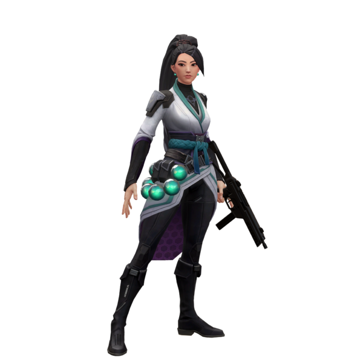
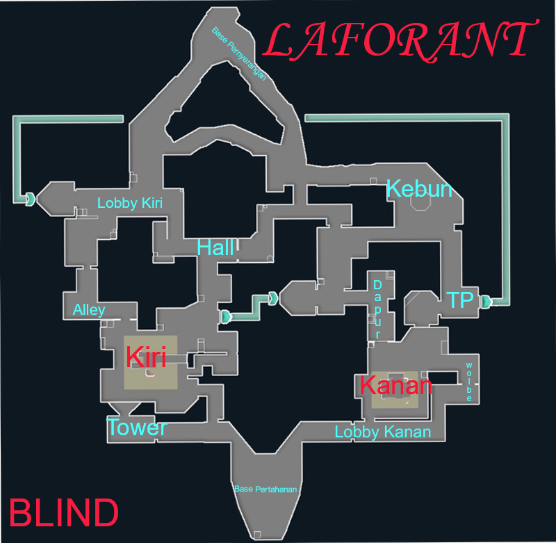

Laforant adalah sebutan untuk game First Person Shooter
yang akan rilis secara resmi pada tanggal 9 Desember
2021 di Indonesia. Laforant memiliki 11 ronde pertandingan
dimana anda dapat digunakan untuk menyerang dan bertahan
dalam pertempuran tembak-tembakan dan hanya memiliki satu
nyawa saja setiap round. Dan untuk mode kami memiliki
mode un-ranked, ranked, dan ravage.

Setiap Agents dimana memiliki skill dan kemampuan
yang berbeda dan dalam setiap round tidak ada agen yang sama
dalam satu tim sehingga jika sudah di pilih tidak bisa ganti
dengan agent yang lain, dan jika agent tersebut sudah di pilih
tidak dapat memilih agent yang sama.

Setiap maps yang kami miliki mempunyai suasana yang berbeda-beda
sehingga dibuat khusus untuk menyusun sebuah rencana dalam bentuk
pertahanan maupun penyerangan, suasana dalam maps pun berbeda-beda
sehingga kalian akan menjadi tertarik bermain dan menciptakan sebuah
untuk bermain.